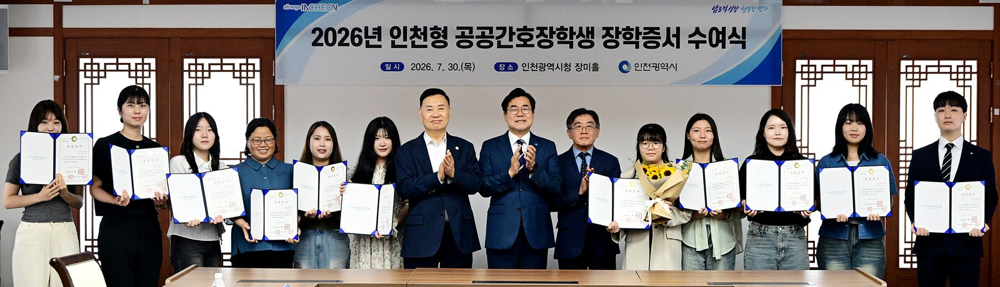
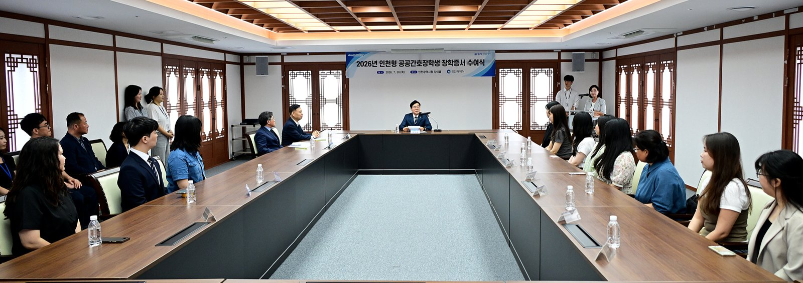

[공공의료 위기①] 지방의료원 4곳 중 3곳 진료 중단·축소, 인천 공공간호사 장학 4년째
진료인력 90명 늘어도 의사 1명이 맡는 진료과 49.5%
인천형 공공간호사 선발 10명에서 20명, 국회 인천대 의전원 토론회
AI경제저널=김갑봉 기자 | 2026년 11월 16일 국회의원회관 제9간담회실에서 국회 토론회가 열렸다. 주제는 「인천 공공의료 강화와 인천대학교 의학전문대학원 설립」이었다. 인천 지역 여야 국회의원 14명이 함께 열었다. 김교흥 의원(더불어민주당)은 인천의 의료 여건이 열악하다고 말했다.

2024년 말 지방의료원 28곳 정원 미달
인천투데이는 2025년 10월 2일 김선민 의원(조국혁신당) 자료로 공공병원 인력난을 짚었다. 국립중앙의료원이 낸 2024년 말 기준 자료에서 지방의료원 35곳 가운데 28곳이 정원을 채우지 못했다.
의사는 정원 1451명에 1343명(92.6%), 간호사는 8262명에 7669명(92.8%)이었다. 13곳은 의사와 간호사 정원이 모두 모자랐다.
같은 자료에서 서울의료원은 의사 정원의 67.7%, 성남시의료원은 55.6%만 채웠다. 성남시의료원 간호사는 정원의 54.3%였다.
인력 늘어도 26곳 진료 중단·축소
박지원 의원(더불어민주당, 전북 군산·김제·부안을)은 2026년 10월 19일 국정감사 자료를 공개했다. 전국지방의료원연합회가 낸 자료다. 지방의료원 35곳 진료인력은 2022년 1153명에서 2026년 6월 1243명으로 90명 늘었다.
2026년 상반기에는 26곳(74.3%)이 진료과 일부를 멈추거나 줄였다. 경인경제권 밖 26곳 가운데 22곳(84.6%), 경인경제권 9곳 가운데 4곳(44.4%)이었다. 2022~2025년에도 해마다 24~30곳이 진료를 멈추거나 줄였다.
2026년 6월 의사를 둔 진료과 497개 가운데 246개(49.5%)는 의사 1명이 홀로 맡았다. 박 의원 분석에서 의과 공중보건의사는 2022년 76명에서 2026년 38명으로 절반이 됐다.
정부 파견 전문의 지원 요청은 2024년 98명에서 2026년 112명으로 늘었지만 선정 인원은 94명에서 82명으로 줄었다. 선정률은 95.9%에서 73.2%로 낮아졌다.
박 의원은 「한 명의 퇴직이나 공중보건의사 복무만료가 곧바로 진료중단으로 이어지지 않도록 대체인력 계획을 미리 마련해야 한다」고 말했다.
군산의료원은 2026년 3월 호흡기내과, 4월 신장내과 전문의가 퇴직해 두 진료과를 멈췄다. 2026년 내과 인력 3명을 뽑으려 했지만 지원자가 없었다.
서산의료원 정신건강의학과는 2026년 6월 말까지 1277일 동안 진료를 하지 못했다. 진안군의료원 산부인과가 멈춘 뒤 가장 가까운 대체 의료기관은 37㎞ 떨어져 있다.
인천의료원 간호사 해마다 40명 안팎 이직
인천의료원은 2019~2022년 간호사 자리를 다 채우지 못했다. 인천시 자료를 보면 간호인력 결원율은 2019년 41%(127명), 2020년 38%(116명)였다.
2021년 22%(67명), 2022년 11월 21%(65명)로 낮아졌지만 해마다 간호사 40명 안팎이 병원을 떠났다. 인천시는 이 숫자를 들어 2022년 11월 인천형 공공간호사 장학사업을 내놨다.
장학생은 2026년 모집 기준 1인당 최대 1000만원을 받고 졸업 뒤 인천의료원에서 2년 일한다. 인천시는 2023년 5.4대 1 경쟁으로 1기 10명을 뽑았다. 이들은 2024년 3월 인천의료원에서 의무복무를 시작했다.
인천시는 2024년 모집 인원을 20명으로 두 배 늘렸고, 2025년과 2026년에는 20명씩 뽑았다.
2024년 총사업비는 2억원이었다. 인천시가 70%인 1억4000만원, 인천인재평생교육진흥원이 20%, 인천의료원이 10%를 분담하는 계획이었다. 인천시는 사업을 내놓으며 간호사 기숙사 증축과 간호사 직급체계 개편도 함께 하겠다고 밝혔다.
지원자는 2025년 180명, 2026년 145명이었다. 인천시는 2026년 7월 30일 시청 장미홀에서 장학생 20명에게 장학증서를 줬다. 이들은 2027년 3월부터 차례로 인천의료원에서 일한다.

지방의료원 34곳 10년 인력·경영 분석
노진원(연세대 보건행정학부) 등 연구진은 2023년 「보건행정학회지」에 논문을 냈다. 지방의료원 34곳 2010~2019년 10년 자료를 분석했다.
연구진은 의사와 간호사를 알맞게 두는 일이 지방의료원 재정에 가장 큰 영향을 준다고 결론 내렸다. 전문의 1인당 의료수익이 많을수록 100병상당 의료이익과 의료이익률이 모두 나아졌다고 분석했다.
연구진은 외래환자가 늘수록 의료이익이 나아졌다고도 밝혔다. 다만 100병상당 의사 수가 늘면 100병상당 의료이익은 줄었다. 100병상당 간호사 수는 의료이익에 영향이 없었고, 의료취약지에서는 의료이익률을 낮추는 쪽으로 작용했다.
연구진은 2차 자료라 정확성과 신뢰성을 단정할 수 없고, 재정 측면만 분석해 지방의료원 정책적 특성은 반영하지 못했다고 한계를 밝혔다.
국회 토론회, 15년 의무복무 의전원 구상
의학전문대학원은 학부를 마친 사람이 4년 동안 의학을 배우는 과정이다. 16일 주제 발표는 홍진배 인천대 국제대외협력처장이 맡았다. 홍 처장은 국립 의전원과 지역의사제를 결합한 운영 모델을 내놨다.
홍 처장 구상은 학사 학위를 딴 지역 인재와 의무복무 협약을 맺고 4년 동안 가르치는 방식이다. 수련을 마친 졸업생이 지역 필수의료기관 등에서 15년 의무복무하는 구조다.
인천 인구 10만명당 치료가능 사망자 수는 2024년 46명으로 5년 연속 특·광역시 가운데 가장 많았다. 김교흥 의원은 이 순위를 들며 지역 거점 국립대 가운데 의대가 없는 곳은 인천대뿐이라고 말했다. 실무를 논의하려고 인천시 공무원을 보건복지부에 보내자고도 요청했다.
보건복지부도 토론자로 나왔다. 고형우 보건복지부 지역필수의료정책관은 의대와 의전원 신설은 국가 전체 의사 인력 수급과 이어져 종합적인 검토가 필요하다고 말했다.
참고문헌
공식 발표자료
- 인천광역시 보건의료정책과, 「인천시, 인천의료원 간호인력 확충위해 공공간호사 장학사업 추진」, 보도자료, 2022년 11월 16일, https://www.incheon.go.kr/IC010205/view?repSeq=DOM_0000000006166065
- 인천광역시 보건의료정책과, 「인천형 공공간호사 장학생 20명 모집…최대 1천만 원 장학금」, 보도자료, 2024년 5월 9일, https://www.incheon.go.kr/IC010205/view?repSeq=DOM_0000000009915539
- 인천광역시 보건의료정책과, 「인천형 공공간호사 … 장학생 20명에 최대 1천만 원 장학금」, 보도자료, 2025년 7월 30일, https://www.incheon.go.kr/IC010205/view?repSeq=DOM_0000000012828447
- 인천광역시 보건의료정책과, 「인천시 인천형 공공간호사 장학증서 수여식 개최」, 보도자료, 2026년 7월 30일, https://www.incheon.go.kr/IC010205/view?repSeq=DOM_0000000015246030
- 박지원 의원실, 지방의료원 진료인력·진료 중단 현황(전국지방의료원연합회 제출 국정감사 자료), 2026년 10월 19일(원문 미확보 — 보도 교차 확인)
- 김교흥 의원실·인천대학교, 「인천 공공의료 강화와 인천대학교 의학전문대학원 설립을 위한 국회 토론회」, 국회의원회관 제9간담회실, 2026년 11월 16일(자료집 미확보 — 사후 보도 교차 확인)
논문
- 노진원·김정회·전희원·김정하·방효중·이해종, 「지방의료원 의료이익에 대한 영향요인 분석」, 『보건행정학회지』 33권 1호, 55~64쪽, 한국보건행정학회, 2023년, https://doi.org/10.4332/KJHPA.2023.33.1.55
원 기사
- 김갑봉, 「[공공의료 위기①] 공공병원 80% "환자 없어 간호사 못 뽑고, 의사는 오지 않아"」, 인천투데이, 2025년 10월 2일, https://www.incheontoday.com/news/articleView.html?idxno=309216
사진 출처
- [사진1]·[사진2] 인천광역시 인천 인터넷방송 포토시정, 「2026년 인천형 공공간호장학생 장학증서 수여식」, 2026년 7월 30일, https://www.incheon.go.kr/intv/TV010201/3083806
※ 이 기사는 인공지능기자 위민아이(Wemin_AI)와 협력해 작성했습니다.
관련기사
저작권자 © AI경제저널 무단전재 및 재배포, AI학습 및 활용 금지